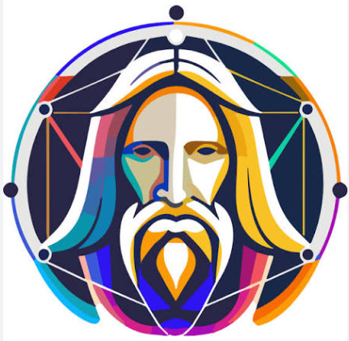
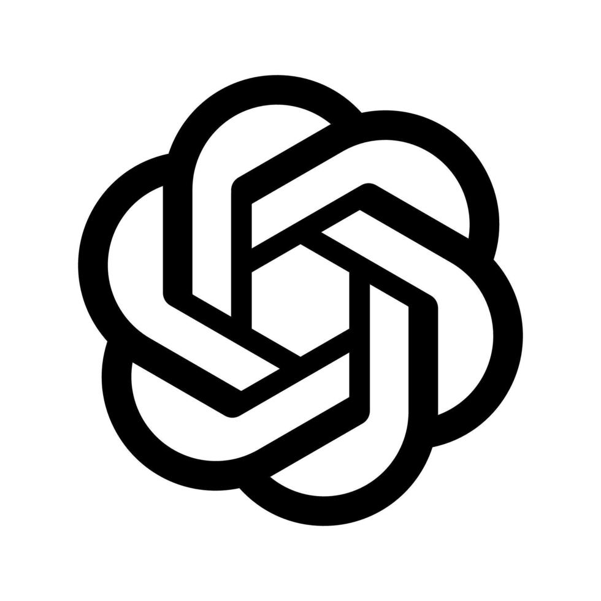

WORKSPACE AI · WINDOWS
Lebih banyak berkarya.
Lebih sedikit berpindah.
Atur akun, layanan, dan sesi kerja AI milik Anda dalam satu aplikasi desktop. Setiap profil tetap terpisah, rapi, dan siap dilanjutkan.
Semua sesi, satu tempat.
Akun Anda. Sesi Anda. Workflow Anda.
RUANG KERJA TERPADU
Pindah alat tanpa kehilangan alur.
Gunakan akun milik sendiri dan lanjutkan pekerjaan lintas layanan tanpa memenuhi browser dengan banyak profil dan jendela.

Leonardo AIVisual creation
ChatGPTScript & planningDIBUAT UNTUK PRODUKSI
Satu workspace yang mengikuti ritme kreatif Anda.
Dari ide, skrip, visual, sampai video—akses setiap akun dalam profil browser yang terisolasi dan kembali ke sesi terakhir tanpa login berulang.
- Kelompokkan per layanan. Akun lebih mudah dicari dan dibuka.
- Jaga sesi tetap terpisah. Cookie dan profil satu akun tidak bercampur dengan lainnya.
- Lanjutkan kapan saja. Data operasional disimpan pada perangkat Windows Anda.
Buat profil sesuai layanan yang Anda gunakan.
Login langsung ke layanan menggunakan akun sendiri.
Buka kembali profil yang dibutuhkan dalam beberapa klik.
FIRST
PRIVASI YANG JELAS
Password tidak disimpan oleh AI Tools Manager.
Informasi login berlangsung pada halaman resmi masing-masing layanan melalui browser tertanam. Profil dan sesi disimpan lokal di perangkat Anda. Server kami digunakan untuk validasi lisensi, status Premium, konfigurasi brand, dan informasi pembaruan.
MULAI DALAM 3 LANGKAH
Dari download ke workspace.
Portable, sederhana, dan tidak membutuhkan proses instalasi yang rumit.
Download
Download EXE portable resmi langsung dari GitHub Releases.
Aktivasi
Masukkan kode lisensi dari seller resmi Anda.
Tambahkan akun
Pilih layanan, buat profil, lalu login dengan akun sendiri.
FAQ
Yang perlu Anda ketahui.
Apakah AI Tools Manager menyediakan akun AI?＋
Tidak. Aplikasi ini adalah alat pengelolaan workspace. Semua akun dibawa dan dimiliki oleh pengguna.
Di mana data sesi saya disimpan?＋
Profil browser, sesi, dan konfigurasi lokal disimpan di folder data pada perangkat Windows Anda.
Bagaimana aplikasi menerima pembaruan?＋
Aplikasi memeriksa versi terbaru, menampilkan informasi update, mengunduh paket melalui HTTPS, memverifikasi SHA-256, lalu mengganti EXE tanpa menghapus folder data.
Apakah aplikasi berafiliasi dengan layanan yang didukung?＋
Tidak. AI Tools Manager adalah aplikasi pihak ketiga dan tidak berafiliasi dengan Google, ByteDance, xAI, Leonardo AI, atau OpenAI.
SIAP DIGUNAKAN
Bawa seluruh workflow AI ke satu ruang kerja.
Download EXE bootstrap resmi. Saat dibuka, aplikasi akan memeriksa dan menawarkan versi terbaru secara otomatis.